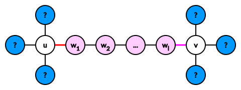

二维平面中有 $n$ 个点，其中有一个点是原点 $O$。
定义点 $A, B$ 的 "距离" 为：
你需要合理的选择 $k$ 个点，使得这 $k$ 个点之间两两距离之和最大。
第一行包含两个正整数 $n, k$ ($2 \leq k \leq n \leq 5 \times 10^5$)，分别表示点的个数和要选取的点的个数。
接下来 $n$ 行，每行两个整数 $x_i, y_i$ ($-10^9 \leq x_i, y_i \leq 10^9$)，描述第 $i$ 个点的坐标，保证所有点的坐标两两不同，且 $\exists 1 \leq i \leq n$ 满足 $x_i = y_i = 0$。
输出一行一个实数，表示 $k$ 个点两两距离之和的最大值。答案被认为正确当且仅当相对或绝对误差不超过 $10^{-6}$。
考虑这样一个星 (扫帚) 形树状结构：$O$ 为根节点，对于其余点 $P$，定义它的父节点为线段树 $PO$ 上最靠近 $P$ 的点 (若无其它点则父节点为 $O$)。这样容易验证两个点之间的距离就等于它们在树上的距离。
记这棵树为 $T$。于是我们的目标就变成了在 $T$ 中选取 $k$ 个点，使得它们两两距离之和最大。
首先，容易验证一个结论：对任意的树 $T = \left( V, E \right)$，设最优解中选择的 $k$ 个点为 $S$，则 $V \setminus S$ 为树上的一个连通块。
反之，设 $u, v \in V \setminus S$，且 $u, v$ 不连通，因此路径 $u \leadsto v$ 中存在 $S$ 中的点。
设路径 $u \leadsto v$ 为 $u \to w_1 \to w_2 \to \cdots \to w_l \to v$，可以不妨假设 $w_1, w_2, \cdots, w_l \in S$，如下图所示：
此时，设红色边 $\left( u, w_1 \right)$ 的 "左侧" 有 $L$ 个点 (在 $S$ 中)，粉色边 $\left( w_l, v \right)$ 的 "右侧" 有 $R$ 个点。
那么将 $S$ 中的 $w_1$ 换成 $u$ 后，$S$ 中的点两两距离之和的增量为 $$ \operatorname{dist} \left( u, w_1 \right) \cdot \left[ \left( L + 1 \right) \left( k - L - 1 \right) - L \left( k - L \right) \right] = \operatorname{dist} \left( u, w_1 \right) \cdot \left( k - 2 L - 1 \right) $$
同理，将 $S$ 中的 $w_l$ 换成 $v$ 后，$S$ 中的点两两距离之和的增量为 $\operatorname{dist} \left( w_l, v \right) \cdot \left( k - 2 R - 1 \right)$。
注意到 $\left( k - 2 L - 1 \right) + \left( k - 2 R - 1 \right) = 2 \left( k - L - R - 1 \right) = 2 \left( l - 1 \right) \geq 0$，因此 $\max \left\{ k - 2 L - 1, k - 2 R - 1 \right\} \geq 0$，即对应至少有一个增量非负，与假设矛盾 (或者说可以调整)。
对于这道题，注意到题中树 $T$ 结构的特殊性，可知 $T$ 上的连通块可以分为两种类型：
我们下面对这两种情况分别求出答案，最后取个 $\max$ 即可。
先考虑情形 2，即 $O \notin S$ 的情形。
此时我们设这 $L$ 条臂分别为 $A_1, A_2, \cdots, A_L$，在其上分别有 $c_1, c_2, \cdots, c_l$ 个点在 $S$ 中，显然这 $c_i$ 个点是最接近叶子的点。
则，这 $k = \sum c_i$ 个点的距离之和，我们将其拆分为每条 “臂” 的贡献，最后再求和。
那么，以 “臂” $A_1$ 为例，其上有 $c_1$ 个点，它们到 $O$ 的距离 (递减) 分别为 $d_0, d_1, \cdots, d_{c_1 - 1}$。
则这部分的贡献可以拆成两个部分：
这 $c_1$ 个点两两之间内部产生的贡献。
不难发现，这个值就等于 $$ \sum_{0 \leq i < j < c_1} \left( d_j - d_i \right) = \sum_{i=0}^{c_1 - 1} \left( c_1 - 2 i - 1 \right) d_i $$
这 $c_1$ 个点与其余 $k - c_1$ 个点间产生的贡献。
此时，对于 $c_1$ 中的每个点 $v$，它都可以与剩下的 $k - c_1$ 个点中产生 $\operatorname{dist} \left( O, v \right)$ 的贡献，故这部分的总和为 $$ \left( k - c_1 \right) \sum_{i=0}^{c_1 - 1} d_i $$
将两部分相加，即得 $$ \color {fuchsia} {V_{c_1} = \sum_{i=0}^{c_1 - 1} \left( k - 2 i - 1 \right) d_i} \tag 1 \label 1 $$
那么，注意到加点的顺序一定是 $0, 1, 2, \cdots$，因此对 $\eqref 1$ 式进行差分即得到添加第 $j$ 个点的贡献：$$ \Delta V_j = V_j - V_{j-1} = \left( k - 2 j - 1 \right) d_j $$
于是我们只需对所有点 (不止是 $A_1$ 上) 计算出对应的 $\left( k - 2 j - 1 \right) d_j$ 的值，然后从大到小排序取前 $k$ 大即可。
在考虑情形 1，即 $O \in S$ 的情形。
此时，由 $T$ 的结构可知 $V \setminus S$ 中一定是某个臂上点的一个子集，我们首先枚举这条臂，假设是 $A_1$。
那么，这样的方案总数是 $O \left( \left| A_1 \right| \right)$ 的，因此我们只需要求出所有这样的方案的答案，最后取 $\max$。因此下面的问题就是如何快速维护答案。
注意到对于 “臂” $A_2, A_3, \cdots, A_L$，它们的贡献是不变的，仍然可以用 $\eqref 1$ 式进行计算。
而对于 $A_1$，我们考虑状态改变的过程，对于集合 $V \setminus S$，它每在树上 "平移" 一个单位，只会对 $\eqref 1$ 式中的一项产生影响 (大约是 $\left( k - 2 i - 1 \right) \left( d_j - d_i \right)$ 之类的式子)，因此只需要不断做加法即可维护。
最后分析一下时间复杂度，在情形 2 中的复杂度即为排序复杂度，顺便为情形 1 做一些预处理；后期情形 1 的处理可以做到线性。故总时间复杂度就是 $O \left( \operatorname{Sorting} \left( n \right) \right)$。
#include <bits/stdc++.h>
#define EB emplace_back
using std::cin;
using std::cout;
typedef std::pair <int, int> pr;
typedef std::pair <pr, int> ppi;
typedef std::vector <int> vector;
const int N = 500054;
int n, K, A = 0;
ppi g[N];
vector ps[N];
double sum = 0., unit[N], buf[N];
double a[N], pre[N], suf[N];
inline void up(double &x, const double y) {x < y ? x = y : 0;}
inline void down(int &x, const int y) {x > y ? x = y : 0;}
double solve_center() {
int i, j, k = 0, m; long long $; double ret = 0.;
for (i = 0; i < A; ++i) {
m = ps[i].size();
for (j = 0; j < m; ++j)
$ = (K - 2 * j - 1ll) * ps[i][j], a[i] += buf[k++] = unit[i] * $;
pre[i + 1] = pre[i] + a[i];
}
for (i = A - 1; i >= 0; --i) suf[i] = suf[i + 1] + a[i];
assert(k == n), std::sort(buf, buf + n, std::greater <double> ());
for (i = 0; i < K && i < n; ++i) ret += buf[i];
return ret;
}
double solve_arm() {
int i, j, k, m, c, u; long long $; double cur, ret = 0.;
if (K > n) return 0.;
for (i = 0; i < A; ++i) {
m = ps[i].size();
if (K <= n - m) continue;
c = K - (n - m + 1), u = m - c;
cur = pre[i] + suf[i + 1];
for (j = 0; j < m - u; ++j)
$ = (K - 2 * j - 1ll) * ps[i][j], cur += unit[i] * $;
up(ret, cur);
for (j = m - u, k = m; j > 0; )
--j, --k, $ = (K - 2 * j - 1ll) * (ps[i][k] - ps[i][j]), up(ret, cur += unit[i] * $);
}
return ret;
}
int main() {
int i, j = -1, x, y, d; double ans;
std::ios::sync_with_stdio(false), cin.tie(NULL);
cin >> n >> K;
for (i = 0; i < n; ++i) {
if (cin >> x >> y, !(x || y)) {j = i; continue;}
d = abs(std::__gcd(x, y)), x /= d, y /= d, g[i] = ppi(pr(x, y), -d);
}
assert(~j), std::swap(g[j], g[--n]);
std::sort(g, g + n);
for (j = 0, i = 1; i <= n; ++i)
if (i == n || g[j].first != g[i].first) {
unit[A] = hypot(g[j].first.first, g[j].first.second);
for (ps[A].reserve(i - j); j < i; ++j) ps[A].EB(-g[j].second);
++A;
}
ans = solve_center(), up(ans, solve_arm());
cout << std::setprecision(12) << ans << '\n';
return 0;
}
坑1：对于 $k = n$ 的时候，需要特别注意一下 (如果实现不够好)，以及情形 1 中，当 $k$ 过小时在过短的 “臂” 中没有可行的解 (需要 continue 掉)。
坑2：注意计算其余臂的贡献总和的时候，不要用所有臂的和减去某一条臂的，可这个减法可能会造成较大的精度误差，建议使用前缀和/后缀和的方法。